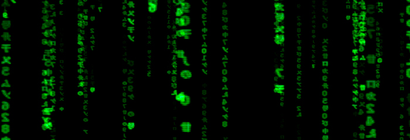
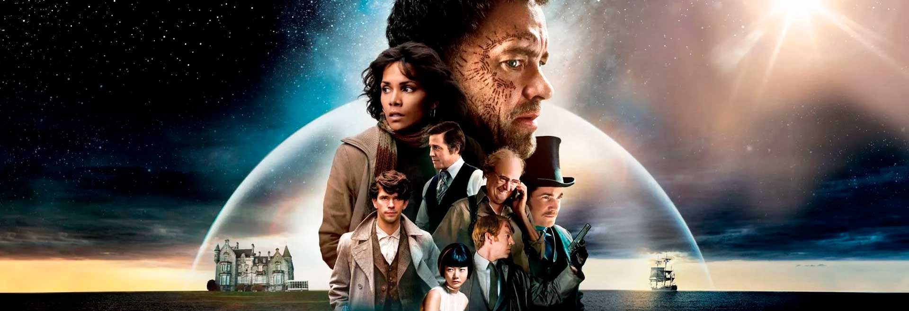
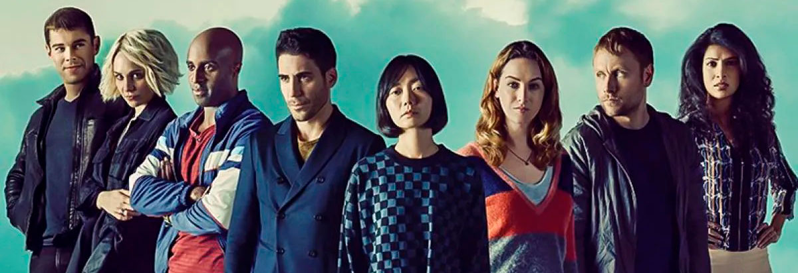

Lilly
Lilly Wachowski, es una directora, guionista y productora norteamericana, nacida el 29 de diciembre de 1967, en Chicago, Illinois. Junto a su hermana Lana, fueron las creadoras de Matrix en 1999, una de las sagas de ciencia ficción más influyentes de los últimos años. Sus proyectos más recientes son Cloud Atlas y la serie Sense8.
Lana
Lana Wachowski, es una directora, escritora y productora norteamericana, nacida el 21 de junio de 1965, en Chicago, Illinois, Estados Unidos. Famosa por hacer un duo fÍlmico con su hermana Lily. En su trayectoria, hay cintas como Speed Racer (2008), Cloud Atlas (2012), El destino de Júpiter (2015) y la serie Sense8 (2015-2018).
Obras

MATRIX

CLOUD ATLAS
